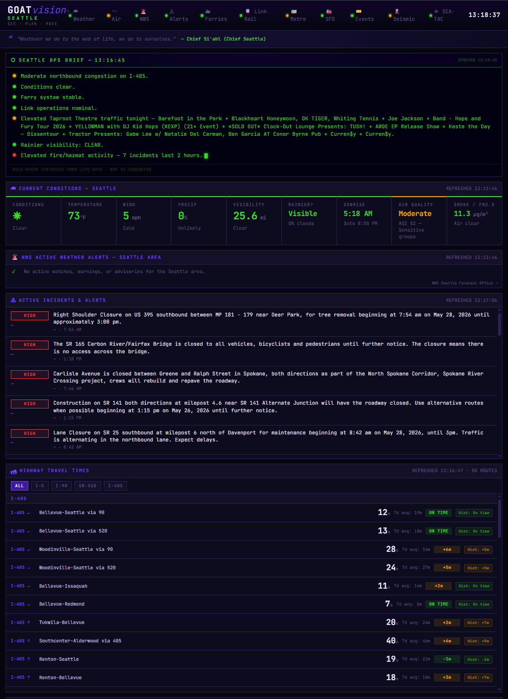
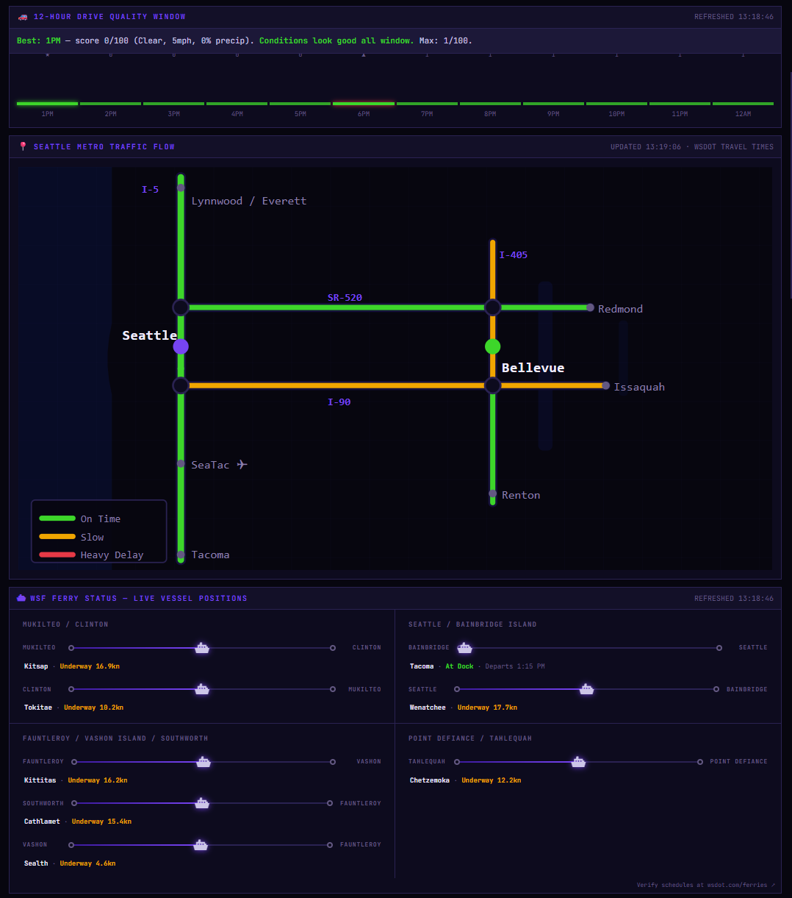
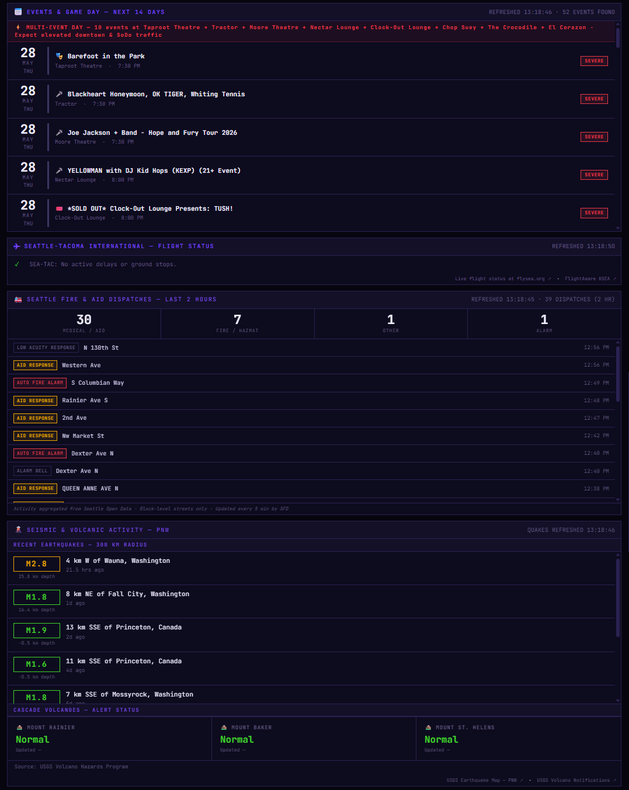
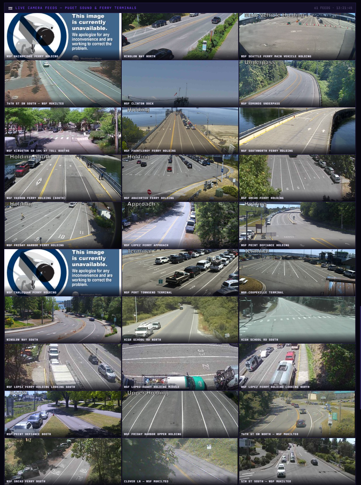

A single portable HTML file that aggregates 16 live data endpoints across 9 APIs — traffic, transit, ferries, weather, fire dispatch, seismic, and flight delays — into a unified situational awareness interface for the Seattle metro area. No login. No backend. No build step. Copy it anywhere with an internet connection and it runs.

A 60-second walkthrough of GOATvision Seattle pulling live data across 16 endpoints — traffic, ferries, weather, transit, fire dispatch, and more. Narrated. No cuts.
GOATvision Seattle was built to answer a simple question: what is actually happening in Seattle right now? Not fragmented across six browser tabs, not behind a paywall, not requiring an account. One page. All of it.
The dashboard pulls live highway travel times from WSDOT, real-time Link Light Rail arrivals from OneBusAway, Washington State Ferry vessel positions via GPS tracking, current weather and air quality from Open-Meteo, Seattle Fire Department dispatch records from the last two hours, M1.5+ earthquakes and Cascade volcano alert levels from USGS, SEA-TAC airport delay status from FAA, and active game and event schedules from ESPN and Ticketmaster — 16 individual endpoint calls across 9 distinct providers. Every panel updates on its own refresh cycle — ferry positions every 2 minutes, weather every 5, events every hour.
At the top of the page, the Seattle Ops Brief synthesizes everything into a plain-English situational summary — worst traffic corridor, current weather conditions, ferry gap status, transit availability, active NWS alerts, and today's events — no AI, purely conditional logic.
Every source below is fetched client-side, on its own refresh cycle, with graceful error states when data is unavailable.
These are live screenshots from the production build — not mockups, not staged. The data you see was live at the time of capture.



The entire application lives inside a single HTML file — ~3,800 lines of HTML, CSS, and vanilla JavaScript with no npm packages, no build pipeline, and no backend server. Every data fetch happens client-side. Copy the file to any machine with an internet connection and the dashboard runs.
Hist: badge in the travel times panel.CITY_CONFIG. A new city can be stood up by changing lat/lon, team IDs, transit stop IDs, and API keys — the panel logic stays intact.The city-specific logic is isolated in a single config object. Swapping it out is the majority of the work needed to deploy a new city.
GOATvision Seattle is live at goatvisionseattle.vercel.app — no account, no login, no friction. Open it and the dashboard starts pulling data immediately.